Making Retro del Sol · A lesson in giving direction
The prompts that shaped the game.
A seaside town became a place to walk, drive and sail with other people. These fifteen moments show how the requests changed as there was more to see and play.
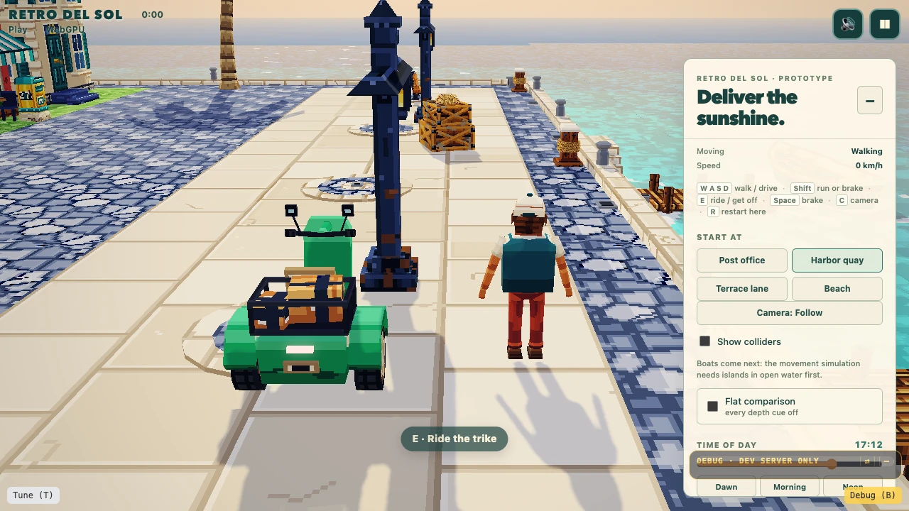
The quotes are excerpts from the original messages, with spelling preserved. Each round also involved implementation and testing. The full prompts are there to open when you want more context.
Ask to see the game
The project began with four possible games. Asking for a picture of play made it easier to choose the kind of world to build.
we want these to not look like box art or concept art, but rather, reflect what in-game visuals would look like. this will set both the creative and art direction of the game we build. think about 4 distinct premises of the game, and then generate 4 representatives mock ups.
Read the full prompt
Original message to the coding agent. Spelling and wording preserved.
ok now we should use your in built image generation to generate 4 game mock ups for the game we want to build we want these to not look like box art or concept art, but rather, reflect what in-game visuals would look like. this will set both the creative and art direction of the game we build. think about 4 distinct premises of the game, and then generate 4 representatives mock ups. use sub-agents to do this in parallel.
The seaside courier idea, first called Tidepost, became Retro del Sol. Its little streets, warm colours and delivery vehicle gave the later work a direction.

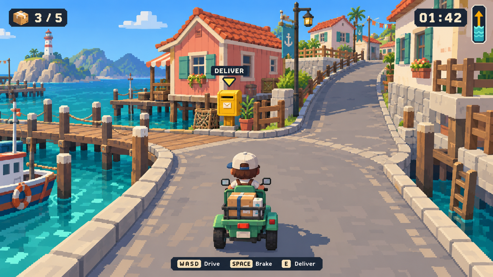
Turn the idea into a place
Once the seaside setting was chosen, the next request described the experience: a world large enough to drive around.
I think if we can go for a well built out world big enough to drive around it would already be a great showcase. could make it multiplayer as well.
Read the full prompt
Original message to the coding agent. Spelling and wording preserved.
I think if we can go for a well built out world big enough to drive around it would already be a great showcase. could make it multiplayer as well. ok let's go with tidepost, but let's not call it tide post, but maybe retro del sol or something what you want to do now is 1. use images 2.5 to generate more reference images that will help us have sufficient understanding and references to build a compelling world. So think about the environment, props, and objects that would be in the world. when this is done, you will then use $retro-diffusion-3d to generate these props, environments, export them into a simple small environment test scene that places these props, environment objects, in blender. 2. use images 2.5 to generate reference turnaround sheets for the character, and then use $retro-diffusion-3d to create the character and have it imported into blender, rigged and animated for the key animations like idle, walk, run, sitting in car. 3. use images 2.5 to generate reference images for the vehicle, and then use $retro-diffusion-3d to create the vehicle, imported into blender, and then consider what rig set up is needed for it to be animated
Other messages from the same exchange are left out here.
The longer request split the work into the town and props, the courier, and the vehicle. Reference pictures helped them belong together. Retro Diffusion made the models, which were then inspected and adjusted in Blender, a 3D editor.
One example: asking Retro Diffusion for a bench
The agent also wrote prompts for individual objects. This one describes the bench and asks for it on its own.
Wooden park bench matching the reference: three seat slats, two back slats, chunky dark navy iron legs with square feet. Single freestanding bench, no ground or other objects. Coarse pixel textures.
Exact asset-generation prompt sent to Retro Diffusion, separate from the human’s instructions to the coding agent.

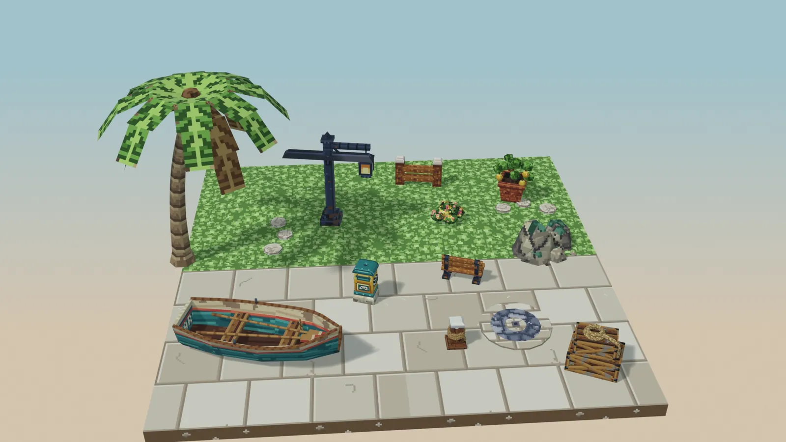
Make a place to try things
A beautiful town would not tell us whether walking and driving felt good. The next useful place was a simple practice area.
let's focus on a new scene that is a plain gym for testing things like the walking and entering the trike and then testing the trike movement.
Read the full prompt
Original message to the coding agent. Spelling and wording preserved.
ok while the agent focuses on the environment and tech art, let's focus on a new scene that is a plain gym for testing things like the walking and entering the trike and then testing the trike movement. we will also test the camera, with large area for just moving around, and then an area with some placeholder courses.
Other messages from the same exchange are left out here.
The movement gym gave the courier room to walk, mount the trike and drive through obstacles. The camera could be tested there too. A follow-up rule removed the countdown so testing started immediately.

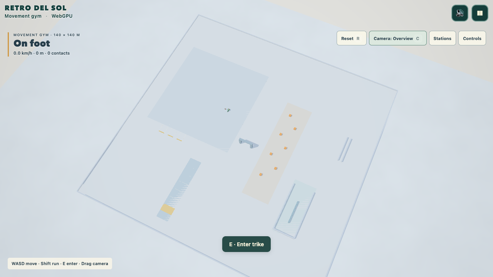
Say what looks wrong
The character could move, but the walk felt stiff. This feedback named the visible problems and the feeling to aim for.
his walk feels like his legs can't bend at his knees his elbows too, are not bending much his up/down motion is very jittery i think we should focus on exaggerated, whimsical, clearly visible movements
Read the full prompt
Original message to the coding agent. Spelling and wording preserved.
his walk feels like his legs can't bend at his knees his elbows too, are not bending much his up/down motion is very jittery
Other messages from the same exchange are left out here.
The walk and run were reworked with clearer knee and elbow bends and a smoother bounce. The clips below show the earlier motion and the revised motion in the game.
Say what should touch
On the trike, the courier's hands floated near the handlebars and stayed still while the trike turned.
when he goes left and right on the vehicle, his hands should attach to the steering wheel and turn left and right too
Read the full prompt
Original message to the coding agent. Spelling and wording preserved.
when he goes left and right on the vehicle, his hands should attach to the steering wheel and turn left and right too
Both hands now reach for grip points on the handlebars and follow them as the trike steers. The arms bend to keep the hands in place, and the grip blends in as he climbs on and lets go as he gets off.
Ask for a bigger, bouncier move
Getting on the trike was a quick slide into the seat. It worked, but it had no character.
can we have an exagerrated animation of him jumping into the bike, with it bobbing as he lands in
Read the full prompt
Original message to the coding agent. Spelling and wording preserved.
can we have an exagerrated animation of him jumping into the bike, with it bobbing as he lands in
his jump out of the car also needs the same fix
Read the full follow-up
Original message to the coding agent. Spelling and wording preserved.
his jump out of the car also needs the same fix
The courier now crouches, hops high and drops into the seat, and the trike dips and bounces back as he lands. A short follow-up gave getting off the same treatment: he stands, crouches and jumps clear while the trike settles.
Write the action in order
Getting out of the boat looked weightless. The correction described a sequence anyone could imagine.
The jumping out of the boat needs work, he sort of floats out from seating. He should stand up, with the boat rocking a bit, then jump out with the boat rocking more.
Read the full prompt
Original message to the coding agent. Spelling and wording preserved.
The jumping out of the boat needs work, he sort of floats out from seating. He should stand up, with the boat rocking a bit, then jump out with the boat rocking more.
The courier now stands, prepares to jump and leaves the boat. The boat reacts as his weight shifts, then rocks more as he jumps away.
Show where land meets water
The courier could walk and the boat could sail, but nothing joined the two. There had to be places to step from land into a boat and back.
this needs 'prefabs' to indicate the water <> land <> boat connection - if u know what i mean, so as to allow getting on and off at regions
Read the full prompt
Original message to the coding agent. Spelling and wording preserved.
ok cool, now we need to have in the gym getting into water and getting off water this needs 'prefabs' to indicate the water <> land <> boat connection - if u know what i mean, so as to allow getting on and off at regions
we need an action button when the player is in a boat hotspot - right now it's not clear exactly if it;s in the hotspot
Piers became one reusable piece with a spot to stand and a berth for the boat, used both for what you see and for the rules of boarding. Much later, a play session showed the spot was hard to find, so a ring now marks it on the deck and a Board button appears over the boat when you stand in it.

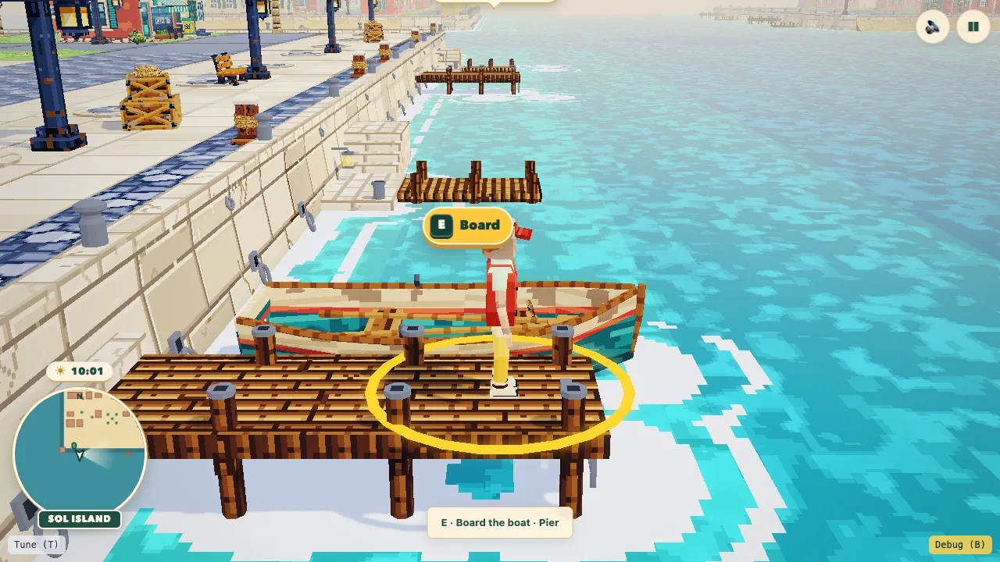
Ask for dials, not one answer
The town looked flat. Nobody knew yet which lighting and effects would make it feel deep.
I want to see the effect of lighting, post processing, fog, bloom, etc. in order to see what we can do to bring the level to be less 'flat' and more 'depth'.
we can do better with the water what are some ways to get water depth, froth, motion, height, etc.
Read the full follow-up
Original message to the coding agent. Spelling and wording preserved.
we can do better with the water what are some ways to get water depth, froth, motion, height, etc.
The town scene gained sliders and switches for time of day, fog, haze, bloom, shadows, outlines and more, with a flat comparison and a reset. A second pass gave the sea depth colour, foam along the shore, reflections and two layers of moving water.

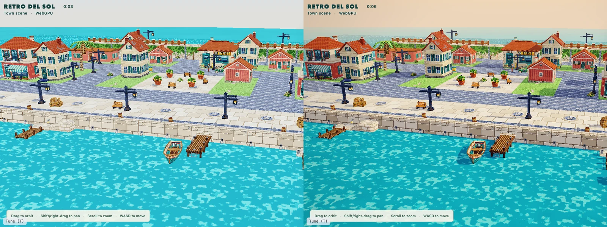
Give the journey somewhere to go
A bigger world needed more than repeating buildings. The player had to be able to travel through it.
if we want to have a large world that multiple people can walk around and drive around, but obviously there's a rendering limit, what should we do?
Read the full prompt
Original message to the coding agent. Spelling and wording preserved.
if we want to have a large world that multiple people can walk around and drive around, but obviously there's a rendering limit, what should we do? i assume we do some form of 'level streaming', such that only parts within the fov are in?
A world test explored loading the area near the player. A later playable version connected sixteen islands with boat journeys. The courier could leave the home pier, cross the water and go ashore on another island.

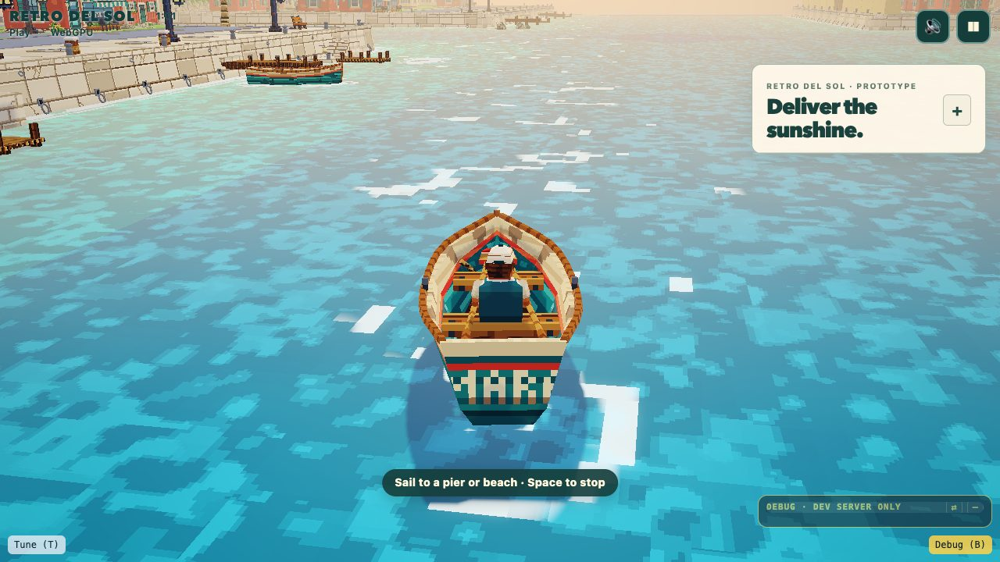
Say what you couldn't do
The islands were connected by boat, but while playing, the way off an island wasn't there or wasn't visible.
i can't seem to find a path from the my island to the next.
Read the full prompt
Original message to the coding agent. Spelling and wording preserved.
ok you would have made the massive world that is connected? i can't seem to find a path from the my island to the next.
right now it's hard to locate or see the docks because they are a level below, someone might think there is no way off the island
Read the full follow-up
Original message to the coding agent. Spelling and wording preserved.
right now it's hard to locate or see the docks because they are a level below, someone might think there is no way off the island, how can we provide a good on screen indicator or something as they get within line of site at a good distsance.
The first report uncovered a real gap: four islands had no boat at all. Every pier now has one. The second report led to signs above the piers showing how many boats are free and how far away, plus a pointer at the edge of the screen when no pier is in view.

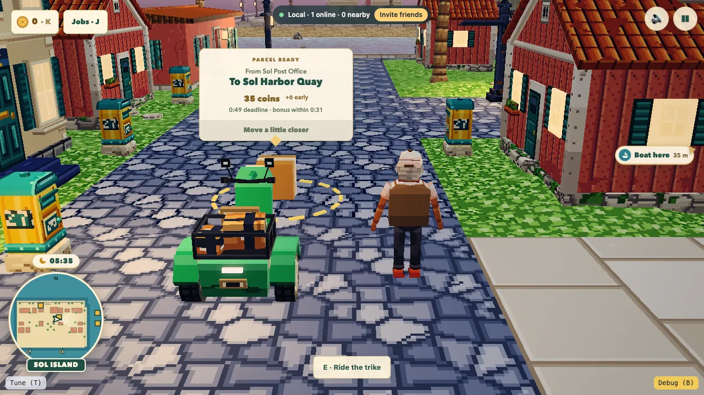
Help the player see what to do
Deliveries worked, but too much attention went to buttons and status text. The request brought directions into the world itself.
There should be a in-game visual guide trail that guides a path toward the location. The player hence can easily know where to go. This is unobtrusive.
Read the full prompt
Original message to the coding agent. Spelling and wording preserved.
we now should focus on fixing the entire parcel delivery feature first of all, the core mechanic of picking parcels and delivering them is not great - because it involves looking in the top left to see statuses, requires clicking buttons, and has no real visual gameplay feedback. 1. A user reaching a parcel pick up hotspot should have its details appear in the middle over the parcel with just enough info. Start location, End location, Payment, Timing. The modal also says press <action button> to start. 2. Once that happens, the parcel hotspot and the parcel is removed and the target is spawned. Status should appear in the center top of screen like the timer and location it needs to be delivered to. 3. There should be a in-game visual guide trail that guides a path toward the location. The player hence can easily know where to go. This is unobtrusive. 4. When they reach the spot, they need to be on foot in order to deliver the parcel. They get paid with a receipt (any fast bonuses, etc.) generated on screen to give a nice tacticle feedback folowed by a chop. Do you get it now? Further more, if the parcel needs to be delivered to another island - the guide should lead them to the nearest boat. Then on boat, the guide should lead them to the target pier. Then from the pier, they get guided to the target.
thanks the receipt ends up blocking the view so show it on the side
Read the full follow-up
Original message to the coding agent. Spelling and wording preserved.
thanks the receipt ends up blocking the view so show it on the side [Image #1] it is not obvious to dock, becauase a 'faux' ship is there. We should allow docking on either side, and show very clearly where the docking area is with like a 'ghosting'
A trail guides the courier to the destination, via a boat and pier when needed. A receipt confirms the handover. Playing again revealed that the receipt covered too much of the scene, so it moved to the side.

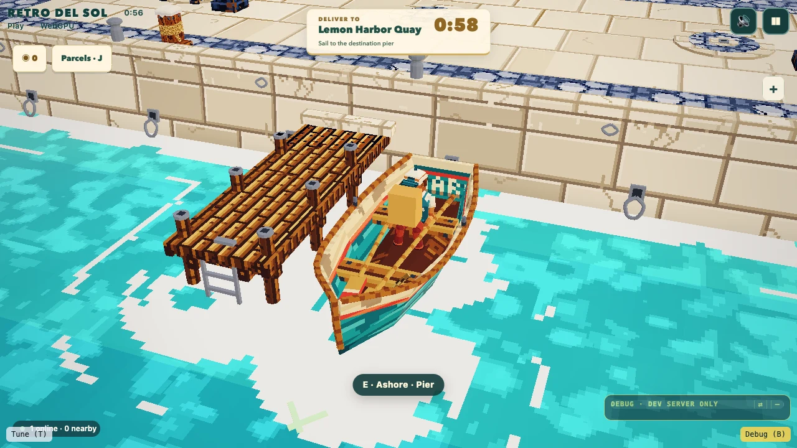
Let players put themselves in
Everyone started as the same courier. Players needed a simple way to make the character theirs before playing.
now we want to be able to have a bit of customisation for users before they enter the game, so their character will be on screen and then they can click customise before going in. simple set of options, with a random button.
Read the full prompt
Original message to the coding agent. Spelling and wording preserved.
now we want to be able to have a bit of customisation for users before they enter the game, so their character will be on screen and then they can click customise before going in. simple set of options, with a random button.
we should have the characer on the right already with the customise under him player name under, with the squiggly lines underneath to ineidcate it can be changed.
Read the full follow-up
Original message to the coding agent. Spelling and wording preserved.
we should have the characer on the right already with the customise under him player name under, with the squiggly lines underneath to ineidcate it can be changed.
The menu now shows your courier, with Customise and your name underneath. Customise opens one row of colours per part, plus Random and Original. Other players see your colours too.

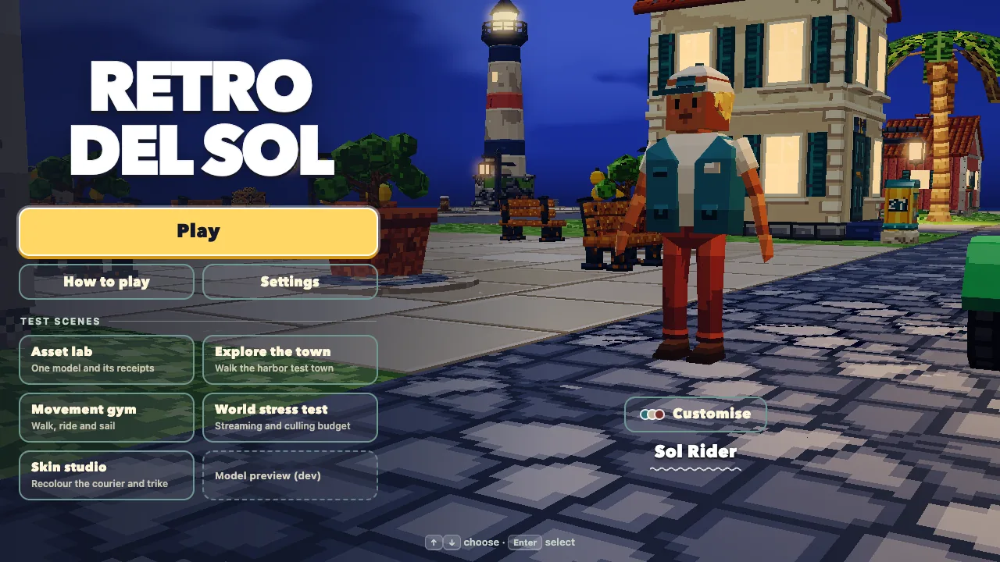

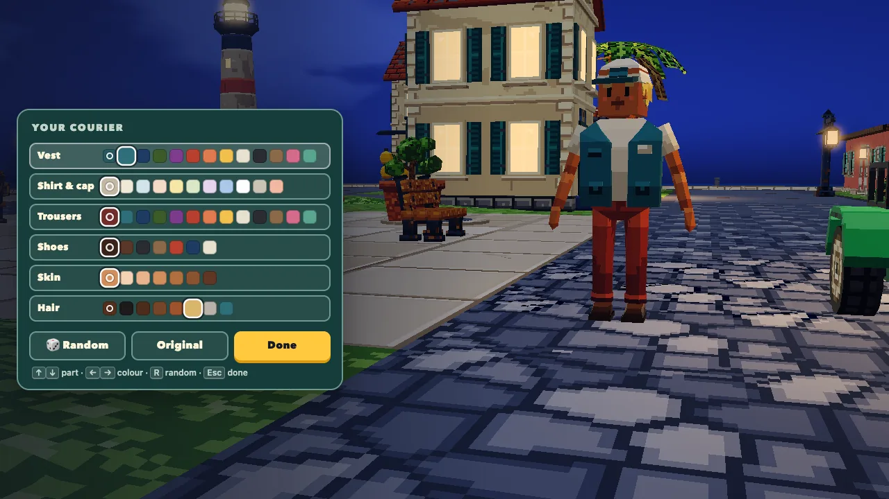
Give a key a new job, with a limit
In the trike and the boat, Shift only slowed you down. Travel between islands could feel slow.
shift when in car should be an boost accelerator but has a cooldown / shift when in boat same thing
Read the full prompt
Original message to the coding agent. Spelling and wording preserved.
shift when in car should be an boost accelerator but has a cooldown / shift when in boat same thing
Other messages from the same exchange are left out here.
Pressing Shift while riding forward now gives a short burst of speed, then a few seconds to recharge. A small meter shows when it is ready, and on phones the Run button becomes Boost.

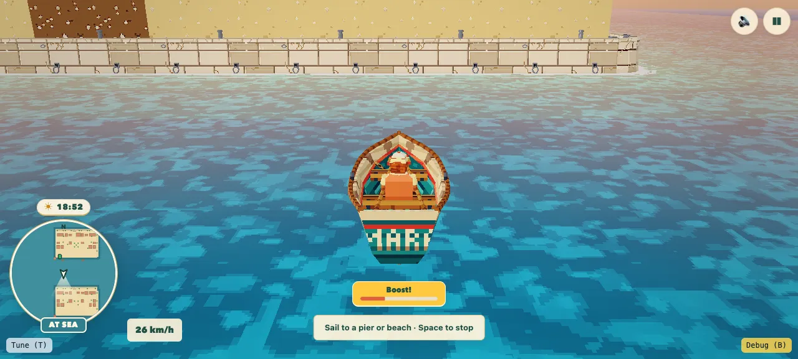
Your next prompt
Give it something you can try.
Start with the experience you want. Once you have a version to play, describe a specific moment that needs work and ask to see the change.
This is a new fill-in template inspired by the examples above, not an original project prompt.
I want the player to feel [feeling] while they [main action]. First, show me [a small scene or example] so I can decide on the direction. When I tried it, I noticed [specific problem]. It should [describe the action or response you want]. Show me the revised version so I can try it again.